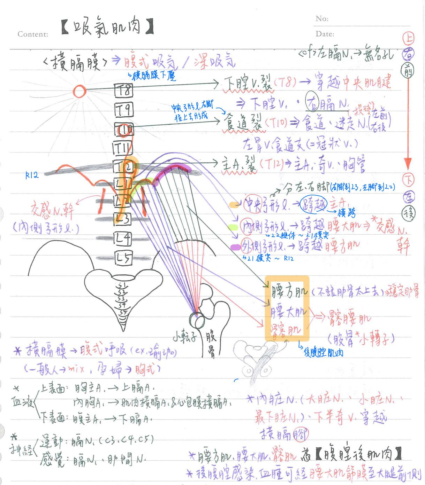

💪🏼 肌肉系統：腹腔後肌肉
後腹腔肌肉：3條
| Name | 起-止 | 神經支配 | 運動 |
|---|---|---|---|
| 腰方肌 (quadratus lumborum m.) | 髂嵴-L1~4 & R12 經橫膈膜外側弓型韌帶 | 腰神經叢 | 側屈軀幹 吸氣時★下壓並穩定肋骨 |
| 腰大肌 (psoas major m.) | T12~L5-股骨小轉子 經橫膈膜內側弓型韌帶 | 腰神經叢 | 屈曲大腿 |
| 髂肌(iliacus) | 髂窩(髂凹)-股骨小轉子 | 股N. | 屈曲大腿 |
- 髂腰肌(iliopsoas)=腰大肌+髂肌，均終止於股骨小轉子，助屈曲大腿
- 後腹腔感染/血腫：可經腰大肌筋膜散佈至大腿前面(因為腰大肌由後方走向大腿前側)
- EX：跌倒摔到後背，可能大腿前方會出現大片瘀青

📖 書本補充：與筆記不同或筆記沒寫到的地方
⚠️
以下為對照書本後整理，筆記原文未更動。書上沒有獨立的「後腹壁肌肉」表格，以下取自橫膈、腰神經叢（含圖 61「後腹壁的肌肉與腰神經叢」）及大腿前隔間的內容。標「筆記 vs 書」的是兩邊寫法不同、建議回頭確認的地方。
與橫膈的關係（p.266–267）
- 橫膈的內側弓狀韌帶跨過腰大肌、外側弓狀韌帶跨過腰方肌（與筆記一致）。
- 橫膈腳：右腳附著到 L3（形成食道裂孔）、左腳附著到 L2（與右腳一起圍成主動脈裂孔）。
- 書的圖 60：肋下N（T12）、髂腹下N（L1）、髂腹股溝N（L1）從腰方肌前面走過。
腰神經叢與腰大肌（p.270–272）
- 閉孔N：從腰大肌內側穿出，支配大腿內側肌肉。
- 生殖股N：穿出腰大肌的前方，分生殖支（進入精索支配提睪肌）與股支（進入下肢）。
- 股N：支配髂肌和下肢肌肉（圖 61 中走在腰大肌外側、與髂肌之間）。
- 腰薦神經幹：沿薦椎翼下行，參與形成薦神經叢（所以合稱腰薦神經叢）。
- 書的提示：注意生殖股N和閉孔N與腰大肌的關係（一個穿前面、一個在內側）。
- 肋下N（T12）是穿過外側弓狀韌帶下方後支配前外側腹壁皮膚的神經（109-2-27）。
髂腰肌（p.381–382、p.386）
- 髂腰肌＝腰大肌＋髂肌：起自 T12–L5 椎骨及髂窩附近，兩者肌腱合併後附著於股骨小轉子；作用＝屈曲大腿。
- 神經：書寫腰神經（L1–L3）及股神經——腰大肌由 L1–L3 腰神經、髂肌由股神經支配（與筆記一致；111-2-21 就是考「腰大肌：股神經」為錯誤配對）。
- 筆記的腰大肌起點寫「T12–L5」，書上一致。
📝 書中歷屆考題（點選答案作答）
101-2-7p.271
在後腹壁，沿薦椎翼 (ala) 下行，組成薦神經叢的神經為：
💡 腰薦神經幹連接腰和薦神經叢，所以兩者有時合稱腰薦神經叢。
104-1-23p.271
下列何者通過鼠蹊韌帶 (inguinal ligament) 與恥骨之間？
💡 A、B 不會往下走到鼠蹊部位；閉孔N通過恥骨後下方的閉孔。
106-1-23p.272
位於腰大肌 (psoas major muscle) 內側的腰神經叢分支是：
💡 閉孔N從腰大肌內側穿出。（Claude 註：選項 C 中文寫髂腹股溝神經、英文寫 iliohypogastric，書上中英不一致，照書轉錄。）
105-1-20p.272
下列何者出現於骨盆且直接源自腰神經叢 (lumbar plexus)？
💡 A、B 雖在骨盆，但來自薦神經叢；D 是 S2–S4 組成的副交感神經。
105-1-16p.272
下列何者不是腰神經叢的分支？
💡 後股皮N是薦神經叢的分支。
108-1-26p.272
下列何者不受腰神經叢 (lumbar plexus) 受損影響？
💡 肉膜肌是平滑肌，由自主神經支配，與腰神經叢無關。
109-2-27p.272
下列何者穿過外側弓狀韌帶 (lateral arcuate ligament) 下方後，支配前外側腹壁的皮膚？
💡 閉孔N、股N沒有穿過外側弓狀韌帶；選項 B 雖有穿過，但支配恥骨區的皮膚。（Claude 註：書上選項 B 中文寫髂腹股溝神經、英文寫 iliohypogastric，中英不一致，照書轉錄。）
110-1-29p.386
腰大肌 (psoas major) 與髂肌 (iliacus) 的肌腱合併後附著於股骨 (femur) 的那一個突起上？
111-2-21p.386
下列結構及其神經支配之配對，何者錯誤？
💡 腰大肌由 L1–L3 腰神經支配。